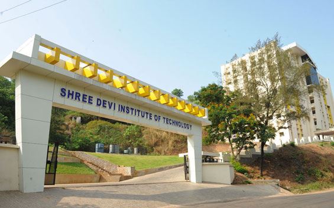

Shree Devi Institute of Technology
Welcome to Shree Devi Institute of Technology (SDIT), Kenjar Mangalore – a premier institution dedicated to excellence in engineering education, management studies, and holistic student development.
Foundation & Excellence
Established in 2006 under the aegis of Shree Devi Education Trust, Shree Devi Institute of Technology has emerged as a beacon of quality education, offering a conducive learning environment that fosters innovation, creativity, and leadership. Our institution is affiliated to Visvesvaraya Technological University (VTU), Belagavi and recognized by the AICTE, New Delhi, ensuring that our academic programs adhere to the highest educational standards and industry relevance.
Our Educational Philosophy
At Shree Devi Institute of Technology, we believe in nurturing well-rounded individuals who are not only technically proficient but also socially responsible and ethically grounded. Our comprehensive curriculum is designed to equip students with the knowledge, analytical skills, and hands-on exposure needed to succeed in the dynamic and competitive world of technology and management.

Faculty Mentorship & State-of-the-Art Labs
Our faculty members are experienced, dedicated, and passionate about teaching and research. They serve as mentors and role models, guiding students through their academic journey and inspiring them to pursue excellence in their chosen disciplines. With state-of-the-art laboratories, modern computing facilities, an extensive library, and a student-centered approach to learning, we provide an enriching educational experience that prepares graduates to tackle real-world engineering and managerial challenges with confidence.
Vibrant Campus Life & Holistic Development
Beyond academics, Shree Devi Institute of Technology offers a vibrant campus life enriched with a wide range of co-curricular activities, technical fests, cultural events, sports facilities, and social community engagement initiatives. We encourage students to explore diverse interests, build teamwork, develop leadership qualities, and contribute positively to society.
Industry Partnerships & Placements
Our strong industry partnerships and proactive Training and Placement Cell ensure that our students are well-prepared for corporate careers. We collaborate with leading MNCs and core engineering recruiters to provide internship opportunities, industrial visits, skill development workshops, and placement assistance, helping our graduates secure rewarding careers across top-tier organizations.
Academic Programs Offered
Shree Devi Institute of Technology offers undergraduate, postgraduate, and doctoral research programs in an ambience of scenic natural beauty set amidst the suburban surroundings of Mangalore:
Bachelor of Engineering (B.E.)
Computer Science (CSE), CSE (AI & ML), Information Science (ISE), AI & Data Science, Electronics & Communication (ECE), Mechanical (ME), Civil (CE), Aeronautical (Aero).
Postgraduate Programs
Master of Business Administration (MBA), Master of Computer Applications (MCA), M.Tech in Construction Technology.
Research Center (Ph.D.)
Recognized Research Centers under VTU offering doctoral research across engineering and management sciences.